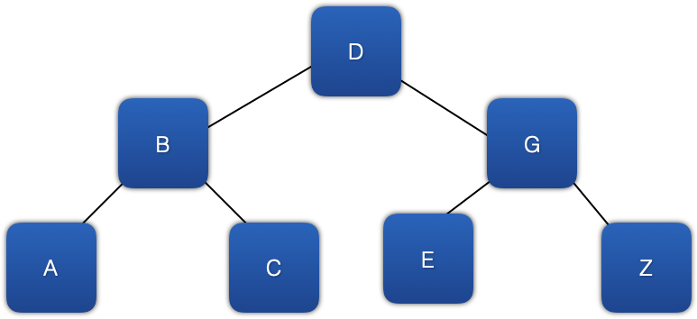

This gets into much more detail on class templates. Go back and review this week's lesson overview if you haven't covered the basics on this. You don't need to master templates in this class -- it's just good to learn about what's going on!
This gets into much more detail on class templates. Go back and review this week's lesson overview if you haven't covered the basics on this. You don't need to master templates in this class -- it's just good to learn about what's going on!
Inside C++ Containers
Many of the standard containers, array, vector stack, queue, and so forth, are actually classes that have a private C-type array as a property. Algorithms are then turned into code, instance functions of the class, to make the use of the C-type array much safer. These methods have been tested, enhanced, fixed, and optimized for decades. That's why it is so much safer to use a standard container that wraps a C-type array than to use one directly. If you are ever tempted to use a C-type array, you should probably use the std::array instead. It adds almost no overhead.
But sometimes, arrays are either too restrictive or the code to manipulate to match the need becomes way to complicated and slow. Here is an image of a structure known as a tree.
Can this be represented using a C-type array? Yes. But just because you can, doesn't mean you should. When you shouldn't, that's when things like list and map come into play. They are not wrappers around a hidden C-type array. Instead they use a completely different design...nodes.
Here is a list. It's what you are going to be reading about for a while.
In this image, each blue square represents a node. A node has data. Each node in the image has A, B, C, or D as its data. A node also 'knows' about other nodes via connections. These connections keep the nodes in some specific order. The connections in the image are the black lines you see connecting the nodes together.
When nodes are well-designed, you can start anywhere in the list and move either direction. That means, each node has to know about the previous node, traditionally known as 'parent', and the next node traditionally known as 'child'. In the image above, the node containing B is the child of the node containing A and the node containing A is the parent of the node containing B.
Examine the tree again.
In this image, each node has to 'know about' two children, traditionally called 'right child' and 'left child.' Therefore, the node containing D is the parent of the two nodes containing B and G. The parent of the node containing B is the node containing D. The parent of the node containing G is also the node containing D.
Compare the list and tree images. Notice that the right-most branch of the tree, the nodes containing D, G, and Z, looks just like a list. That's because a list is just a tree with no branches.😀 It should, then, be possible to create a well-designed node that can be used to represent both a list and a tree. Ah...code re-use...that's a great thing! The code snippet below shows the code for a node that can hold characters and be used for lists and trees.😎
class Node{
private:
char value;
weak_ptr<Node> parent;
shared_ptr<Node> left_child;
shared_ptr<Node> right_child;
public:
Node(char a_value);
Node(char a_value, shared_ptr<Node> a_parent);
char& operator * ();
};//end of Node class
You will see the Node class self-references itself with pointer container classes that you will learn more about in week 5 called weak_ptr and shared_ptr. Pointers are ways to keep track of data or objects to be shared and without needing to make a copy. Think of the parent, left, and right child pointers as the linkages between different nodes of a tree. These pointer containers are also really helpful for designing safe, well maintained code, better than plain pointers that we call these "smart pointers". So we used them here to help create the Node class.
This Node class has a constructor that has parameters for initializing value and the node that should be the parent. When the parent pointer is initialized in the constructor for a new Node instance, the parent can also be accessed to link the parent to the child from the parent Node. When doing this, the nodes in this tree are doubly linked from both directions.
Anytime a smart pointer is used or copied, the smart pointer can track the number of copies in use. When a copy of a smart pointer is deleted, it also takes note. When there are no copies of the smart pointer left, and a deconstructor is called, the smart pointer and the data the container manages can be made free. Stop for a few minutes and think about deleting a bunch of linked nodes. Then answer the question, “Why is the parent pointer a weak_ptr instead of a shared_ptr?” Each pointer class keeps track of its use differently. Discuss this question and possible answers on Microsoft Teams when preparing to work on pointers in week 5.
A node that can hold character-type value is okay, but why can't have our class store any data we want, like a std::list as we introduced in this week's lesson? To do that, the node class has to be changed and become a node class template.
This gets into much more detail on class templates. Go back and review this week's lesson overview if you haven't covered the basics on this. You don't need to master templates in this class -- it's just good to learn about what's going on!
I'm going to show you some code here, but it isn't code in the traditional sense. What we've done is replace the char type keyword with a placeholder called T. The first line of the code snippet below tells the compiler that node is a class template, instead of a complete class, and the type placeholder is called T. The typename keyword is just used to tell the compiler that T is actually a type, not a variable. Until T is actually filled in, this code actually does nothing at all. So as you will see, turning Node into a template definition is simple when one has decided on the class framework.
template<typename T>
class Node{
private:
T value;
weak_ptr<Node> parent;
shared_ptr<Node> left_child;
shared_ptr<Node> right_child;
public:
Node(T a_value);
Node(T a_value, shared_ptr<Node> a_parent);
T& operator * ();
};//end of Node class
As said above, by itself a template class does nothing. It has to be used now to actually come into existance. We do that by instantiating a class template using syntax you will be familiar with in this week's lesson:
Node<int> node;
And there you've just created a Node that stores an int. You can do the
same as before and create a Node that stores <char>. Now you have
one template that can cover Nodes of many types. Templates are
great ways to generate more reusable code without needing to hard code
mostly the same code again and again.
Nodes, by themselves, are pretty useless. Below is a simplistic, naive list class template. Notice that the list class template has Node as a private, inner class. Because of this, no code anywhere else in any app can instantiate or use the encapsulated, Has_A Node class. Because the node class template is completely encapsulated, it can be made much simpler than the previous code where Node was not encapsulated. Now its instance variables can be public and its operator can be deleted. It does keep the two constructors to help make instantiating Nodes easier.
Using this design, each instance of List can instantiate and directly manipulate a node any time the list is told to add an element, but nothing else can touch the list's nodes. This is good.
😀 Now the node won't need any boilerplate code for getters, setters, operators, and the like.😀
Compare the code for Node below with the Node code above.
There is a very important bit of code on the line right after the end of the encapsulated, Node inner class. shared_ptr<Node> root_node;. This is a private instance variable of the List class template. It is a pointer to the Node instance that is the head, beginning, of the list. By convention, we are referring to it as the root of the list. The root is equal to nullptr for an empty list.
If you would like to, you can download the example list.h file.
/*
* list.h
* Never use this code in production.👎 👎
*
* Use std::list.👍
*/
#ifndef list_h
#define list_h
#include <functional>
using std::shared_ptr;
using std::weak_ptr;
/*
* declaration of custom namespace, class template name, properties,
* constructors, operators, and member functions.
*/
namespace naive {
template<typename T>
/// This is a partial, naive implementation of a list-type container.
class List{
private:
/*
* Node is a private inner class so nothing other than an instance
* of list can instantiate one. Node's properties are public so
* instances of list can manipulate and access them directly.
*/
class Node{
public:
T value;
weak_ptr<Node> parent;
shared_ptr<Node> left_child;
shared_ptr<Node> right_child;
//Node constructors
Node(T a_value);
Node(T a_value, shared_ptr<Node> a_parent);
};//end of Node class
shared_ptr<Node> root_node;
public:
List();
void push_back(T aValue);
List<T> map(std::function<T(T& a_value)>mapping_function);
/*
* There are many more instance functions a fully functional list would need.
* Take CSE232, Designing Data Structures, to learn more!
*/
};//end of List class
}//end of custom namespace
using naive::List;
/*
* List instance function implementations
*/
template<typename T>
/// Instantiates an empty List.
///
/// Complexity - O(n)
List<T>::List(){}
template<typename T>
/// Adds a value to the end of the list. The implementation was selected to illustrate how
/// to move through a sequence of linked nodes. There are designs for List that allow
/// push_back to be implemented more efficiently than this naive design.
/// @param aValue the value to add to the list
///
/// - Complexity: O(n)
void List<T>::push_back(T aValue){
shared_ptr<Node>currentNode = root_node;
shared_ptr<Node>node_to_add = shared_ptr<Node>(new Node(aValue));
if(nullptr == currentNode){
root_node = node_to_add;
return;
}
while (nullptr != currentNode->right_child) {
currentNode = currentNode->right_child;
}
currentNode->right_child = node_to_add;
node_to_add->parent = currentNode;
}
template<typename T>
/// A non-destructive mapping instance methods.It applies the lambda function to
/// each value in the existing list and adds it to a list that is returned.
///
/// @param mapping_function the function to be applied to each value in the list
///
/// - Returns: a list that has as each of its values a modified version of each
/// value of this list
/// - Complexity: O(*n*) assuming that mapping_function has a complexity of O(*1*)
List<T> List<T>::map(std::function<T(T& a_value)>mapping_function){
shared_ptr<Node>currentNode = root_node;
//if this list is empty, its mapped version should be empty also
if(nullptr == currentNode){
return List<T>();//empty list
}
List<T> mapped_list;
while (nullptr != currentNode) {
T node_value = currentNode.get()->value;
T mapped_value = mapping_function(node_value);
mapped_list.push_back(mapped_value);
}
//return a copy of the list
return mapped_list;
}
/*
* Node instance function implementations
*/
template<typename T>
/// Value based constructor for a Node. For this constructor, the parent, left child,
/// and right child nodes are all null
/// @param a_value the value to be stored in the node
///
/// - Complexity: O(*1*)
List<T>::Node::Node(T a_value):value{a_value}{}
template<typename T>
/// Value and parent based constructor for a Node. For this constructor, the left
/// and right child nodes are null
///
/// @param a_value the value to be stored in the node
/// @param a_parent a constant reference to the parent node of the node being constructed
///
/// - Complexity: O(*1*)
List<T>::Node::Node(T a_value, shared_ptr<Node> a_parent):value{a_value},parent{a_parent}{}
#endif /* list_h */
To add a value to an empty list, use the list's push_back instance function. You can find the code for the push_back instance function above. There you can see that each time a value is to be added to a list, a node (node_to_add) is created to encapsulate the value. Then that node is added to the list. If the list is empty, node_to_add is added to the list by setting the root node to be node_to_add. Otherwise, the last node found in the list is set as a parent and node_to_add its right child node.
Below is an example of using this naive, incomplete list class template by using it to contain ints and then adding three ints to the list.
#include "list.h"
int main(int argc, const char * argv[]) {
List<int> nums;
nums.push_back(5);
nums.push_back(7);
nums.push_back(9);
//make a new list that has all of the values doubled
List<int> doubled = nums.map([](int an_int)->int{
return an_int*2;
});
return 0;
}